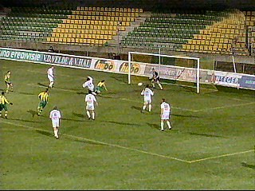
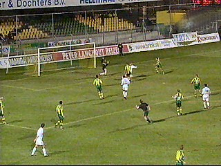
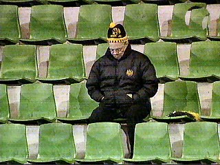
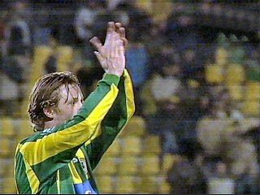

|
ADO Den Haag - Roda JC (1-0) 24 februari 2004 |

In het halflege stadion in het Zuiderpark scoort
Van der Gun in de 19e min. 1-0.

Het eerste halfuur is volledig voor het veel fellere
ADO, daarna krijgt Roda iets meer vat op de
wedstrijd. Hier een van de spaarzame kansen.

Deze treurige supporter was liefst 10 minuten in
beeld bij Yeronimo.

Colinet, Vandenbroeck en Cristiano werden voor
resp. Sonko, Vicelich en Baslanti gewisseld. De
tweede helft liet een machteloos Roda zien tegen
een met man en macht verdedigend Den Haag.
Hier de matchwinner.
Mede door de overwinning van Heerenveen op
Ajax, zakt Roda naar de 6e plaats.
© Koempels
Pleasure Dome